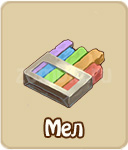

Получено: файл; исходный URL. Получены исходные байты по адресу страницы; идентичность оригинальному домену при замене хоста не подтверждена. Страница: источник.
Мел
ВКонтакте; данные из ZOMBIA; 06 Апреля 2012, 20:33- Тип
- нет данных
- Покупка
- нет данных
- Продажа
- нет данных
- Как получить
- Накопать Палочкой-выручалочкой в первом подземелье. Сделай в Школе: [изображение: Школа] 01 [изображение: Мел] = 10 [изображение: Цемент] +02 (ВКонтакте, ZOMBIA; требует сверки).
- Применение
- нет данных
- Особенности
- нет данных
- Версия и дата
- ВКонтакте; данные из ZOMBIA; 06 Апреля 2012, 20:33
Данные по источнику · ВКонтакте, ZOMBIA · 06 Апреля 2012, 20:33; дата редакции не установлена
Предварительно: Данные одной исторической фанатской страницы; цифры и подписи изображений требуют сверки. Описание и условия сохранены по колонкам без додумывания.. Требуется сверка.
- Описание материала
- [изображение: Мел] Стоимость: 1000 монет
- Нужен в строительстве
- нет текстовых данных; возможны неподписанные изображения
- Где достать
- Накопать Палочкой-выручалочкой в первом подземелье. Сделай в Школе: [изображение: Школа] 01 [изображение: Мел] = 10 [изображение: Цемент] +02
- Нужен в создании
- нет текстовых данных; возможны неподписанные изображения


Данные по источнику · браузерная Зомби Ферма / Зомби Мания; платформа требует проверки · дата URL не гарантирует дату редакции
Предварительно: Индивидуальная страница прочитана автоматически, подписи значков могут содержать ошибки; даты редакции и независимость от ЗомбиСити не установлены.. Требуется сверка.
- Основной блок страницы и подписи изображений
- Материал [иллюстрация: Мел] Мел Цена покупки: 1 [иллюстрация: Зомбаксы] Цена продажи: 1000 [иллюстрация: Монеты] Продать или купить Мел можно в Обменке Зомби Фермы Материал игры Зомби Ферма Мел стал доступным в игре в начале апреля 2012 года. Тогда было введено масштабное обновление с квестами на поиск Твоей любви в подземелье. Мел можно добывать или создавать, он используется в строительстве. Мел можно создать в постройке Школа: Мел [иллюстрация: Мел] = 10 Цемент [иллюстрация: Цемент] + 2 Супер-клей [иллюстрация: Супер-клей] [иллюстрация: Стрелка] Школа [иллюстрация: Школа] Раздобыть Мел Палочками можно из подземных ресурсов: Палочка-выручалочка [иллюстрация: Палочка-выручалочка] [иллюстрация: Стрелка] Черный мрамор [иллюстрация: Черный мрамор] Черный мрамор [иллюстрация: Черный мрамор] Черный мрамор [иллюстрация: Черный мрамор] Белый мрамор [иллюстрация: Белый мрамор] Белый мрамор [иллюстрация: Белый мрамор] Белый мрамор [иллюстрация: Белый мрамор] Зеленый мрамор [иллюстрация: Зеленый мрамор] Зеленый мрамор [иллюстрация: Зеленый мрамор] Зеленый мрамор [иллюстрация: Зеленый мрамор] Столб [иллюстрация: Столб] Столб [иллюстрация: Столб] Желтая собака [иллюстрация: Декорация Желтая собака] Драгоценный цветок [иллюстрация: Декорация Драгоценный цветок] Из Мела создается материал: Уголь [иллюстрация: Уголь] = 1 Мел [иллюстрация: Мел] + 1 Нефть [иллюстрация: Нефть] [иллюстрация: Стрелка] Пруд [иллюстрация: Пруд] Мел участвует в строительстве построек: Поле чудес [иллюстрация: Поле чудес] Семейное гнездо [иллюстрация: Семейное гнездо] Флаг Челси [иллюстрация: Флаг Челси] Вход в пещеры ЗУ [иллюстрация: Вход в пещеры ЗУ] Спуск в Нижнее днищ [иллюстрация: Спуск в Нижнее днище] Назад в Нижнее днищ [иллюстрация: Назад в Нижнее днище] Дом знаний [иллюстрация: Дом знаний] Малахитовое яйцо [иллюстрация: Малахитовое яйцо] Готический склеп [иллюстрация: Готический склеп] Мел иногда можно найти в сокровищах: Чемодан [иллюстрация: Чемодан туриста] Видео - Добываем Мел Палочками в коричневых столбах подземелья: Видео - Как накопать Мел в Мраморной пещере Палочками-выручалочками:
Данные по источнику · браузерная игра; соцсеть и редакция не указаны · 01.04.2015 — дата статьи; последующие правки неизвестны
Предварительно: Фанатские статьи могут зависеть друг от друга; сверены только перечисленные факты, не вся статья. Цены, рецепты и доступность могли меняться.. Требуется сверка.
- Рецепт
- Для одной пачки: 10 цемента и 2 супер-клея в Школе. Количества совпадают с ранее сохранённым описанием Zombie-island; независимость источников не установлена.
- Получение
- Автор также перечисляет добычу палочками под некоторыми подземными ресурсами и награду за задание «Умники». Не следует считать перечень исчерпывающим.
Связанные сущности
- Пруд — связан со строительством или производством в Пруду — см. стадии и рецепты
- Школа — упоминается в стадиях или производстве Школы